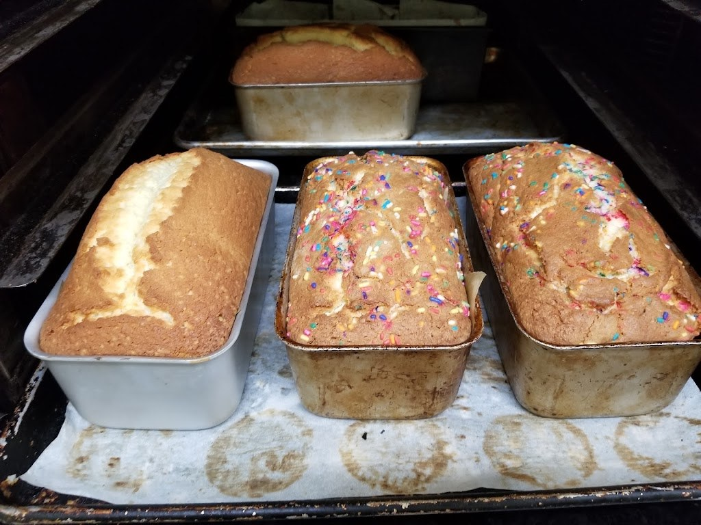
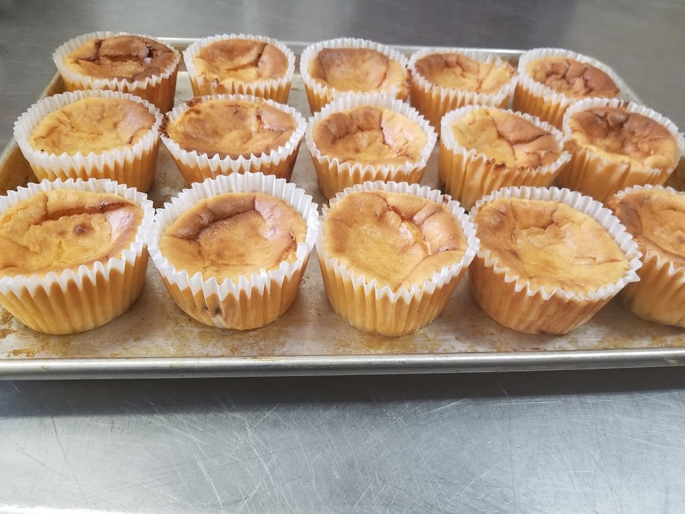

Visit Sweet Auburn Bread Company
Family-run since 1997 by owner and chef Sonya Jones: cookies, cakes, pies, and the signature sweet potato cheesecake, baked fresh daily.
Address: 234 Auburn Ave NE, Atlanta, GA 30303
Hours: Tuesday through Friday, 10:00 AM to 6:00 PM; Saturday, 10:00 AM to 3:00 PM; Sunday and Monday closed.
Phone: (404) 805-7992
Gallery


All three photos are real photos from the business's Google Maps listing: a market table with wicker baskets of baked goods behind the Sweet Auburn banner; four baked loaves in tins on a tray, two topped with colorful sprinkles; and a tray of golden mini cheesecakes in paper cups.
Contact
Sweet Auburn Bread Company serves Atlanta, GA. Questions? Call (404) 805-7992.